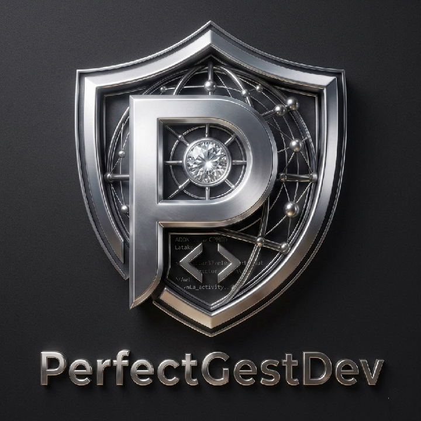

Inovacao em Flutter, Java e SDKs
Criamos apps Flutter, sistemas web e integracoes Java/SDK com foco em performance, seguranca e escalabilidade para o seu negocio.
Software house especializada em aplicativo mobile, plataforma web rapida (Core Web Vitals) e SEO tecnico para crescer no Google.
Carregando experiencia Web de alta performance...